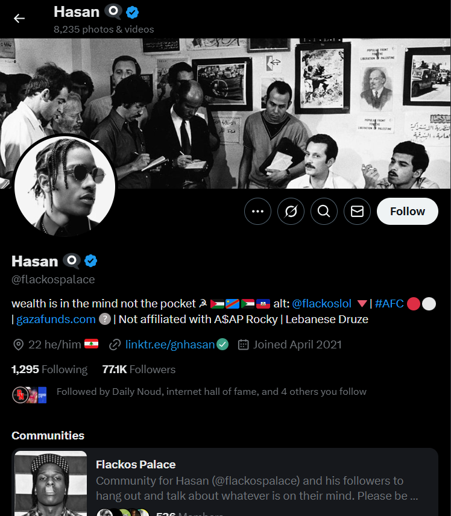
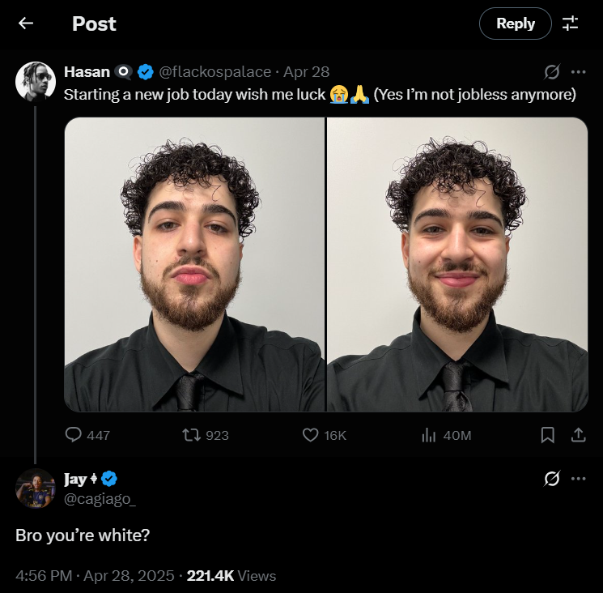

Social media has changed how we view identity forever, as it allows people to be whoever they want to be, within a digital realm. This is good in some cases, as people can express themselves in ways that they might struggle to in real life. However, this power can be easily abused by people who create fake identities to manipulate others or perpetuate false narratives. This can result in some users committing “digital blackface”. This essay will break down this internet phenomenon, display examples of how users commit digital blackface both intentionally and unintentionally, and use Massimo Ragnedda and Maria Laura Ruiu’s text Social Capital and the Three Levels of Digital Divide (2017) to display how this phenomenon of abuses level 2 and 3 of the digital divide.
There are multiple sources that display conflicting information on what “digital blackface”. John Blake’s article on cnn.com What’s ‘digital blackface?’ And why is it wrong when White people use it? (2023) outlines some older definitions on what the concept of digital blackface is, like Lauren Michele Jackson’s definition in her essay We Need to Talk About Digital Blackface in Reaction GIFs (2017). The text explains that if you are not black and are using GIFs of famous black people to reply to social media posts, then you are committing digital blackface. This may be a step to far to call this interaction digital blackface, as one could assess that social media users who do this are posting these GIFs in good faith. However, there are much more modern definitions of the concept which display more overt acts of digital blackface, especially on Tiktok or Twitter. White users will heavily use African American Vernacular English, have profile photos of famous black people (like rappers or other artists), and participate in predominantly black discourses. Users who passively scroll by accounts that do these things could innocently assume that the people behind these accounts are black, due to how they portray themselves. It takes a while of following these users or seeing their posts to figure out that they aren’t black. In certain situations, this isn’t an insidious act, as the people who do this have a connection the discourses that they place themselves in. They are doing this from a place of love for the black community, which is seen quite frequently in Hip-Hop subcultures across different social media platforms. However, some users are blatantly doing this out of a place of hatred for the black community, and do this with the aim of spreading misinformation to and about the black community.
An example of people doing this out of love for the black community is Hasan (@flackospalace on x.com). He runs a somewhat A$AP Rocky themed account, but posts about anything that interests him. His account is quite popular, as he has amassed close to 80k followers.

There was a small uproar focused on him after he posted what he actually looked like, as users found out that he wasn’t black as many people assumed. Below is a screenshot of his face reveal and a reaction to it:

Since this went viral, with around 40 million impressions on his post, Hasan later had to explain that he is Lebanese-American and change the biography of his account accordingly. This act of digital blackface doesn’t seem like it was done in bad faith, as Hasan reacted accordingly as people found problems how he represented himself. Regardless of that, the way he presents himself still rubs many viewers the wrong way, whilst other users who represent themselves in a similar manner were supporting Hasan’s actions through all of this. This example shows that even when doing things like this in good faith, it still may be perceived as incorrect in some way.
However, there are many cases of users that are clearly doing this in bad faith. For example, Joey Mannarino is a conservative right wing content creator. He is quite popular amongst other conservatives, whilst left-wing users find many problems with his opinions and actions.
He, much like other conservative influencers were very actively campaigning for Donald Trump to be president during the 2024 US election period. However, he tweeted something that he probably was aiming to tweet from a burner account:
Users quickly picked up that he was posing as a black woman that supports Trump, in the hopes of influencing other black women to do the same. Luckily, he made a mistake of posting this misinformation on his personal X account. This post displays how digital blackface is often a malicious act that is done on purposed and used to mislead and lie to users across social media platforms.
These examples of digital blackface are quite different in severity, but regardless of that, both examples display 2 of the 3 different levels of the digital divide in Ragnedda and Ruiu’s text. Their text outlines that level 2 of the digital divide relates to how people learn and use technology. Having free access to technology makes it easier to learn and use this technology, such as how social media works and how to create social media accounts. Since Western societies have current technologies as soon as they’re released, they can learn how to you them effectively (Ragnedda and Ruiu, 2017). Therefore, they can learn how to influence people through them easily. Using this line of thinking, it’s clear why both of these instances of digital blackface (especially Mannarino’s tactic) come from the West. Ragnedda and Ruiu’s text outlines level 3 of the digital divide as outcomes and benefits from using technology. How useful technology is to work with in your country is dependent how “developed” that country is, so Western countries benefit more from using technology in their work (Ragnedda and Ruiu, 2017). This is also why digital blackface is more popular in Western regions, as its negative effects are more impactful in those areas. Digital blackface is an abuse of the leverage that western countries have in the digital divide, but in a sense, that’s why it doesn’t matter as much to countries in the southern region. In a strange turn of events, sometimes being less developed isn’t always a bad thing.
Therefore, with the information displayed above, its clear that digital blackface is an issue that has large consequences. It can range from smaller internet uproars, like how it did with Hasan (@flackospalace), to larger uproars and consequences, like with Joey Mannarino. However, both of these examples display how the digital divide deals with more than access to technology, but also with what people use that access for.
Webber, J. (2024) Joey Mannarino was pretending to be a black women lol, x.com. Available at: https://x.com/JWeber988/status/1815573135300710898. (Accessed: 12 June 2025).
Ruiu, M.L. and Ragnedda, M. (2017) ‘Social capital and the three levels of digital divide.’, in M. Ragnedda and G.W. Muschert (eds) Theorizing Digital Divides. 1st edn. Routledge. Available at: https://doi.org/10.4324/9781315455334.
Blake, J. (2023) Analysis: What’s ‘digital blackface?’ and why is it wrong when white people use it?, CNN. Available at: https://edition.cnn.com/2023/03/26/us/digital- blackface-social-media-explainer-blake-cec. (Accessed: 12 June 2025).
Jackson, L.M. (2017) We need to talk about digital blackface in gifs, Teen Vogue. Available at: https://www.teenvogue.com/story/digital-blackface-reaction-gifs. (Accessed: 12 June 2025).
Hasan (undated). Hasan (@flackospalace) / x, Hasan’s X page. Available at: https://x.com/flackospalace. (Accessed: 12 June 2025).
Jay (2025) X interaction, x.com. Available at: https://x.com/cagiago_/status/1882495106928013765?lang=en. (Accessed: 12 June 2025).
Mannarino, J. (undated) Joey Mannarino (@joeymannarinous) / x, Joey Mannarino’s X Page. Available at: https://x.com/JoeyMannarinoUS. (Accessed: 12 June 2025).